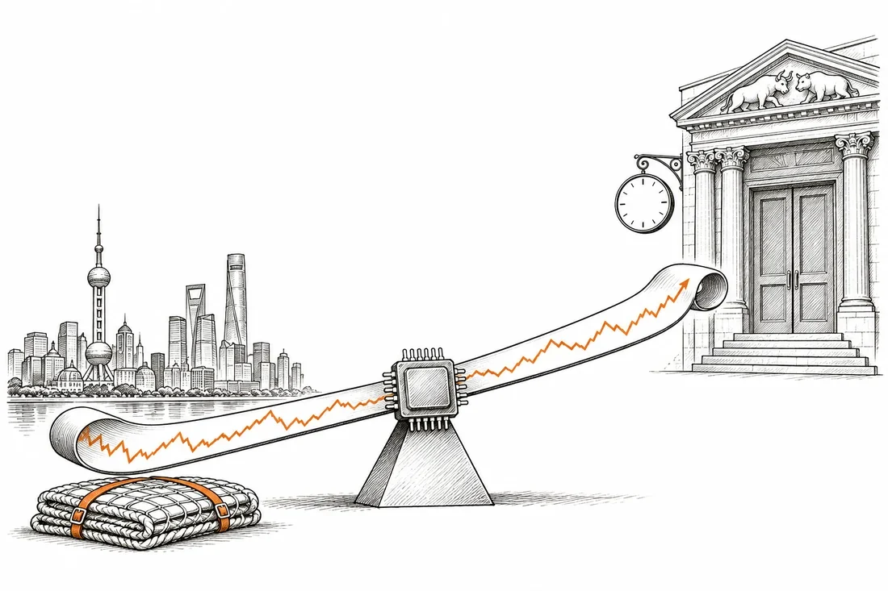

Två pilar, två olika klockor
När Associated Press publicerade sin marknadsrapport kl. 05.23 svensk tid jämförde nyhetsbyrån två marknader som gick åt olika håll. Sydkoreas breda börsindex Kospi hade som mest varit nere 5,8 procent under handeln. I samma rapport stod terminskontraktet på amerikanska S&P 500 1,9 procent högre. Två tydliga pilar åt olika håll, men de hör till olika mätningar. Kospi visar redan gjorda affärer på en öppen börs. Det amerikanska terminspriset rör sig medan handeln med de vanliga aktierna i New York ännu inte har öppnat för dagen. Det säger inte vad USA-börsen kommer att göra när den öppnar. Valutorna visade en liknande skillnad: Reuters rapporterade kl. 05.13 att dollarindex föll något samtidigt som dollarn stärktes mot just yenen. Ett index är en jämförelse med flera valutor, inte med varje valuta för sig.
På fredagen hade amerikanska teknikaktier fallit kraftigt. På måndagen märktes oron hos asiatiska chipbolag, bland annat Samsung Electronics och SK Hynix. Reuters beskrev hur investerare ifrågasätter om intäkterna från AI kan komma fort nog för att bära kostnaderna för de stora satsningarna på datacenter. Det är en förklaring som källorna lyfter, inte en enkel orsak som kan utläsas ur indexsiffran. Ett kursfall mäter inte i sig hur mycket värde en viss AI-tjänst skapar.
Sydkoreas finansiella tillsynsmyndighet säger att den förbereder möjligheten att snabbt sätta en stabiliseringsfond i arbete om läget kräver det. Det är inte samma sak som att fonden redan har börjat köpa aktier. Myndigheten anger också en separat åtgärd: lättare gränser för hur mycket börsbolagen får köpa tillbaka av sina egna aktier per dag, från tisdag och i tre månader. När två marknader rör sig åt olika håll blir det lockande att välja den kurva man gillar bäst. Börja i stället med frågan om vad den faktiskt mäter, och när.
